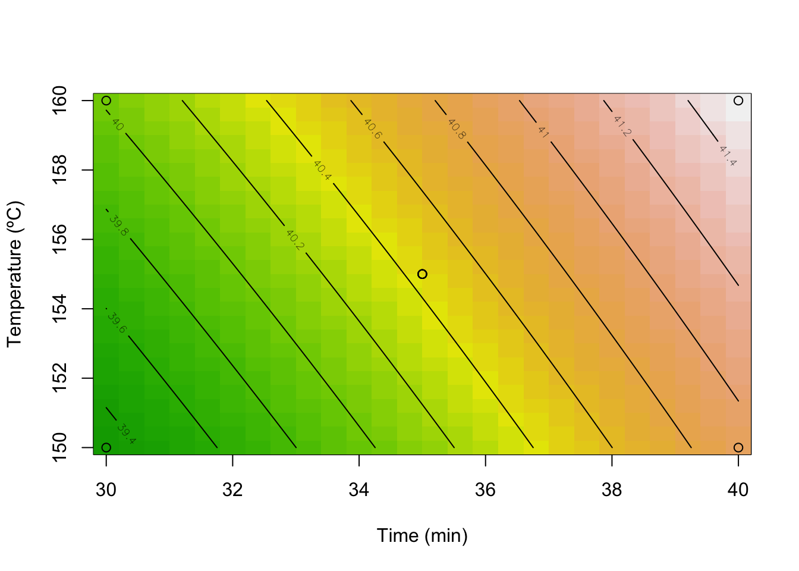

library(rsm)2024-04-18
OBP:
Complexity
With N patients and T timeslots the total number of possible schedules equals \(\dbinom{N+T-1}{N}\). Ignoring constants we have:
\[\dbinom{N+T}{N}\] \[= \frac{(N+T)!}{N!T!}\] \[= \frac{1}{T!} \frac{(N+T)!}{N!} = \] \[=\frac{1}{T!}((N+T)(N+T-1) .... (N+1))\] \[= \frac{1}{T!}(N+T)^T(1(1-\frac{1}{N+T})(1-\frac{2}{N+T}) .... (1-\frac{T}{N+T}))\]
As \(N + T\) increases the fractions with \(N + T\) in the denominator will approach zero. Both \(T!\) and \((N+T)^T\) are products with an equivalent count of factors. Nevertheless, when \(N+T\) is significantly larger than \(T\), the magnitude of the problem will expand with \(\mathcal{O}((N+T)^T)\).
Kaandorp and Koole (2007) proposed a local search algorithm to efficiently find an optimum. The search neighbourhood consists of all single-interval shifts starting from an initial schedule \(x\). For each shifted schedule the loss is calculated. In case a shifted schedule resulted in a lower loss a new search neighbourhood was generated around this new optimal schedule. If a full neighbourhood was searched and no new optimum was found the current optimal schedule must be the global optimum.
If you’re (extremely) lucky the first chosen schedule is the optimal schedule and it will only take one neighbourhood test to confirm it. The number of neighbours in one search neighbourhood equals \(2^T-2\).
If you’re (equally extremely) unlucky the optimum will be found after testing the last shifted schedule in the last neighbourhood. In that case you will have essentially tested the full solution set with size \(\dbinom{N+T-1}{N}\).
An improved search method would converge faster to the global optimum by:
- Using a smarter way to define a starter schedule, or
- Decrease the size of search neighbourhoods, or
- Limit the number of search neighbourhoods
Response Surface Methodology
One alternative search method might be the Response Surface Methodology (RSM). Compared to simple local search RSM could improve efficiency by limiting the number of search neighborhoods.
RSM is a statistical technique used for optimizing processes by identifying optimal conditions. Unlike methods that focus on exploring local optima within nearby regions, RSM seeks to find the direction of the steepest descent and follows this trajectory incrementally. After each step along this path, an evaluation is performed to determine if the change has resulted in an improvement. If no improvement is observed, it suggests that the underlying linear assumption may no longer be valid, prompting a shift to a different search strategy. This iterative process continues until optimal conditions are identified, making RSM effective for navigating complex variable interactions within a design space.
R Code for Lesson 3: Analyzing a 22 Design with Central Points
DoEOpt04 <- data.frame(x1 = c(-1,-1,1,1,0,0,0,0,0),
x2 = c(-1,1,-1,1,0,0,0,0,0),
Time = c(30,30,40,40,35,35,35,35,35),
Temp = c(150,160,150,160,155,155,155,155,155),
Y = c(39.3,40,40.9,41.5,40.3,40.5,40.7,40.2,40.6)
)
# file view
str(DoEOpt04)'data.frame': 9 obs. of 5 variables:
$ x1 : num -1 -1 1 1 0 0 0 0 0
$ x2 : num -1 1 -1 1 0 0 0 0 0
$ Time: num 30 30 40 40 35 35 35 35 35
$ Temp: num 150 160 150 160 155 155 155 155 155
$ Y : num 39.3 40 40.9 41.5 40.3 40.5 40.7 40.2 40.6# setting the relationship between coded and natural variables
DoEOpt04 <- as.coded.data(DoEOpt04,
x1 ~ (Time-35)/5,
x2 ~ (Temp-155)/5)
# regression model with coded variables
model <- rsm(Y ~ FO(x1,x2) + TWI(x1,x2), data = DoEOpt04)
summary(model)
Call:
rsm(formula = Y ~ FO(x1, x2) + TWI(x1, x2), data = DoEOpt04)
Estimate Std. Error t value Pr(>|t|)
(Intercept) 40.444444 0.062311 649.0693 1.648e-13 ***
x1 0.775000 0.093467 8.2917 0.0004166 ***
x2 0.325000 0.093467 3.4772 0.0177127 *
x1:x2 -0.025000 0.093467 -0.2675 0.7997870
---
Signif. codes: 0 '***' 0.001 '**' 0.01 '*' 0.05 '.' 0.1 ' ' 1
Multiple R-squared: 0.9418, Adjusted R-squared: 0.9069
F-statistic: 26.97 on 3 and 5 DF, p-value: 0.00163
Analysis of Variance Table
Response: Y
Df Sum Sq Mean Sq F value Pr(>F)
FO(x1, x2) 2 2.82500 1.41250 40.4213 0.0008188
TWI(x1, x2) 1 0.00250 0.00250 0.0715 0.7997870
Residuals 5 0.17472 0.03494
Lack of fit 1 0.00272 0.00272 0.0633 0.8137408
Pure error 4 0.17200 0.04300
Stationary point of response surface:
x1 x2
13 31
Stationary point in original units:
Time Temp
100 310
Eigenanalysis:
eigen() decomposition
$values
[1] 0.0125 -0.0125
$vectors
[,1] [,2]
x1 -0.7071068 -0.7071068
x2 0.7071068 -0.7071068# contour plot
contour(model, ~ x1+x2,
image = TRUE,
xlabs=c("Time (min)", "Temperature (ºC)"))
points(DoEOpt04$Time,DoEOpt04$Temp)
R Code for Lesson 5: Designs with Central Points – Interpreting a Lousy Fitting
# building the data set
# (run this code to build the DoEOpt05 data set before following the analysis)
DoEOpt05 <- data.frame(x1 = c(-1,-1,1,1,0,0,0,0,0),
x2 = c(-1,1,-1,1,0,0,0,0,0),
Time = c(80,80,90,90,85,85,85,85,85),
Temp = c(170,180,170,180,175,175,175,175,175),
Y = c(76.5,77,78,79.5,79.9,80.3,80,79.7,79.8)
)
# loading Response Surface Methodology package
library(rsm)
# file view
str(DoEOpt05)'data.frame': 9 obs. of 5 variables:
$ x1 : num -1 -1 1 1 0 0 0 0 0
$ x2 : num -1 1 -1 1 0 0 0 0 0
$ Time: num 80 80 90 90 85 85 85 85 85
$ Temp: num 170 180 170 180 175 175 175 175 175
$ Y : num 76.5 77 78 79.5 79.9 80.3 80 79.7 79.8DoEOpt05 <- as.coded.data(DoEOpt05,
x1 ~ (Time-85)/5,
x2 ~ (Temp-175)/5)
# regression model with coded variables
model <- rsm(Y ~ FO(x1,x2) + TWI(x1,x2), data = DoEOpt05)
summary(model)
Call:
rsm(formula = Y ~ FO(x1, x2) + TWI(x1, x2), data = DoEOpt05)
Estimate Std. Error t value Pr(>|t|)
(Intercept) 78.96667 0.49148 160.6702 1.772e-10 ***
x1 1.00000 0.73722 1.3564 0.2330
x2 0.50000 0.73722 0.6782 0.5277
x1:x2 0.25000 0.73722 0.3391 0.7483
---
Signif. codes: 0 '***' 0.001 '**' 0.01 '*' 0.05 '.' 0.1 ' ' 1
Multiple R-squared: 0.3257, Adjusted R-squared: -0.07891
F-statistic: 0.805 on 3 and 5 DF, p-value: 0.5426
Analysis of Variance Table
Response: Y
Df Sum Sq Mean Sq F value Pr(>F)
FO(x1, x2) 2 5.000 2.500 1.150 0.3882680
TWI(x1, x2) 1 0.250 0.250 0.115 0.7483056
Residuals 5 10.870 2.174
Lack of fit 1 10.658 10.658 201.094 0.0001436
Pure error 4 0.212 0.053
Stationary point of response surface:
x1 x2
-2 -4
Stationary point in original units:
Time Temp
75 155
Eigenanalysis:
eigen() decomposition
$values
[1] 0.125 -0.125
$vectors
[,1] [,2]
x1 0.7071068 -0.7071068
x2 0.7071068 0.7071068# plots
plot(DoEOpt05$Time, DoEOpt05$Y, xlab = "Time", ylab = "Yield (%)")plot(DoEOpt05$Temp, DoEOpt05$Y, xlab = "Temperature", ylab = "Yield (%)")contour(model, ~ x1+x2,
image = TRUE,
xlabs=c("Time (min)", "Temperature (ºC)"))
points(DoEOpt05$Time,DoEOpt05$Temp)R Code for Lesson 7: Analyzing a Central Composite Design – R tutorial
# building the data set
# (run this code to build the DoEOpt05 data set before following the analysis)
DoEOpt06 <- data.frame(x1 = c(-1, -1, 1, 1, 0, 0, 0, 0, 0, 1.414, -1.414, 0, 0),
x2 = c(-1, 1, -1, 1, 0, 0, 0, 0, 0, 0, 0, 1.414, -1.414),
Time = c(80, 80, 90, 90, 85, 85, 85, 85, 85, 92.07, 77.93, 85, 85),
Temp = c(170, 180, 170, 180, 175, 175, 175, 175, 175, 175, 175, 182.07, 167.93),
Y = c(76.5, 77, 78, 79.5, 79.9, 80.3, 80, 79.7, 79.8, 78.4, 75.6, 78.5, 77)
)
# loading Response Surface Methodology package
library(rsm)
# checking file structure
str(DoEOpt06)'data.frame': 13 obs. of 5 variables:
$ x1 : num -1 -1 1 1 0 ...
$ x2 : num -1 1 -1 1 0 0 0 0 0 0 ...
$ Time: num 80 80 90 90 85 ...
$ Temp: num 170 180 170 180 175 175 175 175 175 175 ...
$ Y : num 76.5 77 78 79.5 79.9 80.3 80 79.7 79.8 78.4 ...# setting the realtionship between the coded and the natural variables
DoEOpt06 <- as.coded.data(DoEOpt06,
x1 ~ (Time-85)/5,
x2 ~ (Temp-175)/5)
###
##
# regression model for the Yield
model_Y <- rsm(Y ~ SO(x1,x2), data = DoEOpt06)
model_Y <- rsm(Y ~ FO(x1,x2) + TWI(x1,x2) + PQ(x1,x2), data = DoEOpt06)
summary(model_Y)
Call:
rsm(formula = Y ~ FO(x1, x2) + TWI(x1, x2) + PQ(x1, x2), data = DoEOpt06)
Estimate Std. Error t value Pr(>|t|)
(Intercept) 79.939955 0.119089 671.2644 < 2.2e-16 ***
x1 0.995050 0.094155 10.5682 1.484e-05 ***
x2 0.515203 0.094155 5.4719 0.000934 ***
x1:x2 0.250000 0.133145 1.8777 0.102519
x1^2 -1.376449 0.100984 -13.6303 2.693e-06 ***
x2^2 -1.001336 0.100984 -9.9158 2.262e-05 ***
---
Signif. codes: 0 '***' 0.001 '**' 0.01 '*' 0.05 '.' 0.1 ' ' 1
Multiple R-squared: 0.9827, Adjusted R-squared: 0.9704
F-statistic: 79.67 on 5 and 7 DF, p-value: 5.147e-06
Analysis of Variance Table
Response: Y
Df Sum Sq Mean Sq F value Pr(>F)
FO(x1, x2) 2 10.0430 5.0215 70.8143 2.267e-05
TWI(x1, x2) 1 0.2500 0.2500 3.5256 0.1025
PQ(x1, x2) 2 17.9537 8.9769 126.5944 3.194e-06
Residuals 7 0.4964 0.0709
Lack of fit 3 0.2844 0.0948 1.7885 0.2886
Pure error 4 0.2120 0.0530
Stationary point of response surface:
x1 x2
0.3892304 0.3058466
Stationary point in original units:
Time Temp
86.94615 176.52923
Eigenanalysis:
eigen() decomposition
$values
[1] -0.9634986 -1.4142867
$vectors
[,1] [,2]
x1 -0.2897174 -0.9571122
x2 -0.9571122 0.2897174# contour and perspective plots
contour(model_Y, x1~x2, image = TRUE,
xlabs=c("Time (min)", "Temperature (ºC)"))persp(model_Y, x1~x2, col = terrain.colors(50), contours = "colors",
zlab = "Yield (%)",
xlabs=c("Time (min)", "Temperature (ºC)"))# predictig the Yield at the stationary point
max <- data.frame(x1 = 0.361, x2 = 0.257)
predict(model_Y, max) 1
80.20925 References
Kaandorp, Guido C, and Ger Koole. 2007. “Optimal Outpatient Appointment Scheduling.” Health Care Management Science 10: 217–29.